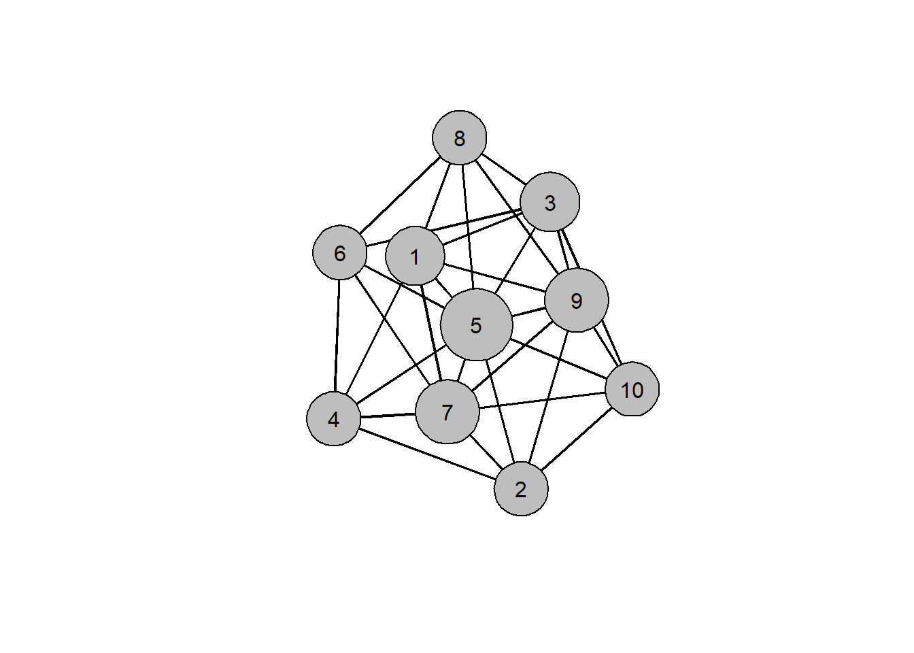

1 + 1 # the hashtag (#) creates a comment, which is not run by R.[1] 2The goal of this tutorial is to demonstrate how easy it is to do network analysis in R! It emulates the typical process of most analyses, starting at loading network data from a file and then moving on to computing some property of interest and finally to visualizing the result.
The document you’re looking at right now is a quarto markdown document (with the .qmd file extension), which allows us to combine (1) prose to explain and document what we are doing, (2) code to run our analysis, and (3) the output of our code, e.g. tables or visualizations.
Any text you write in this document will be interpreted as prose, styled with markdown. If you want to include code, pressing the / key on your keyboard will show a popup dialogue which allows you to create a code cell in the programming language of your choice (in our case R):
1 + 1 # the hashtag (#) creates a comment, which is not run by R.[1] 2If you want to run the code in the cell, you can press the little green arrow symbol. This will show the output of the code below the cell.
R’s greatest strength is its ecosystem of packages. Packages (or libraries) extend the functionality provided by base R for a broad range of specific domains, such as network analysis. To load a package (e.g., the readr package to read a variety of file formats), we write library(package) in an R code cell.
library(readr)Loading a package requires us to have it installed first, which we can do with install.packages("readr"). While we have to load the package each time we open a new R session, we only have to install it once. Because of this, you probably don’t want to include this code in a cell. What you can do instead, is copy-paste the install command into the R console and press enter. In RStudio, the console is by default located in the window below the quarto markdown document.
For this tutorial, we will also load the network and sna packages, which contain functionality to perform network analysis in R:
library(network)
'network' 1.18.2 (2023-12-04), part of the Statnet Project
* 'news(package="network")' for changes since last version
* 'citation("network")' for citation information
* 'https://statnet.org' for help, support, and other informationlibrary(sna)Loading required package: statnet.common
Attaching package: 'statnet.common'The following objects are masked from 'package:base':
attr, ordersna: Tools for Social Network Analysis
Version 2.7-2 created on 2023-12-05.
copyright (c) 2005, Carter T. Butts, University of California-Irvine
For citation information, type citation("sna").
Type help(package="sna") to get started.If we haven’t installed the packages yet, we need to do so before we can load them, as described above.
With the readr package installed and loaded into our R session, we are now ready to load the data containing our network. Here, the network is represented by an edgelist (a specific kind of network data format which we will learn more about in the coming sessions) contained in a .csv file (a comma-separated-values file), which we could also look at in Excel or a text editor.
edgelist <- read_csv("data/edgelist.csv")Rows: 30 Columns: 2
── Column specification ────────────────────────────────────────────────────────
Delimiter: ","
dbl (2): sender, receiver
ℹ Use `spec()` to retrieve the full column specification for this data.
ℹ Specify the column types or set `show_col_types = FALSE` to quiet this message.There are multiple things going on in this one line of code:
We use the read_csv(…) function to load data from a .csv file
We pass the (relative) path to our .csv file as an argument to read_csv, in the "string" format
We assign the data read by the read_csv function to a variable named edgelist using the assignment operator <-
If we look at the edgelist variable by clicking on it in the global environment viewer (top right), we see something very similar to an excel spreadsheet. Rectangular data containing many observations for multiple variables, such as typically contained in a spreadsheet, is in R represented by a data.frame.
By itself, R doesn’t know that it should treat the data in our edgelist data frame as representing a network. Accordingly, we convert our data.frame to a dedicated network object using the network(…) function, where we can also specify some properties of the network, such directedness:
net <- network(edgelist, directed=FALSE)If we just call this network object in a cell, it will show us a helpful summary of our network:
net Network attributes:
vertices = 10
directed = FALSE
hyper = FALSE
loops = FALSE
multiple = FALSE
bipartite = FALSE
total edges= 30
missing edges= 0
non-missing edges= 30
Vertex attribute names:
vertex.names
No edge attributesThis output tells us, among other things, that our network contains 10 nodes and 30 edges.
We can now use a variety of functions on this network object to compute a broad range of quantities of interest, such as the degree centrality of each node (the node’s number of contacts):
deg <- degree(net)
deg [1] 12 10 12 10 18 10 14 10 14 10The result is a vector of values, where e.g. the first value tells us that the first node in the network has a total of 6 contacts.
Finally, we may want to plot our network, labeling the nodes with their IDs and scaling the node size according to node degree. We can use the gplot(…) function to do so, passing a variety of arguments to control the display of labels, node color, or node size:
gplot(net,
gmode="graph",
label = 1:10,
label.pos = 5,
vertex.col="grey",
vertex.cex=sqrt(deg))
Looking at the plot, we can immediately see that node 5 is the most central, having a total of 9 connections to other nodes.
As promised, the above corresponds to a rudimentary network analysis in a total of four lines of code:
edgelist <- read_csv("data/edgelist.csv") # read data from file
net <- network(edgelist, directed=FALSE) # create network object
deg <- degree(net) # compute degree centrality
gplot(net, gmode="graph",
label=1:10, label.pos=5,
vertex.col="grey", vertex.cex=sqrt(deg)) # plot the network